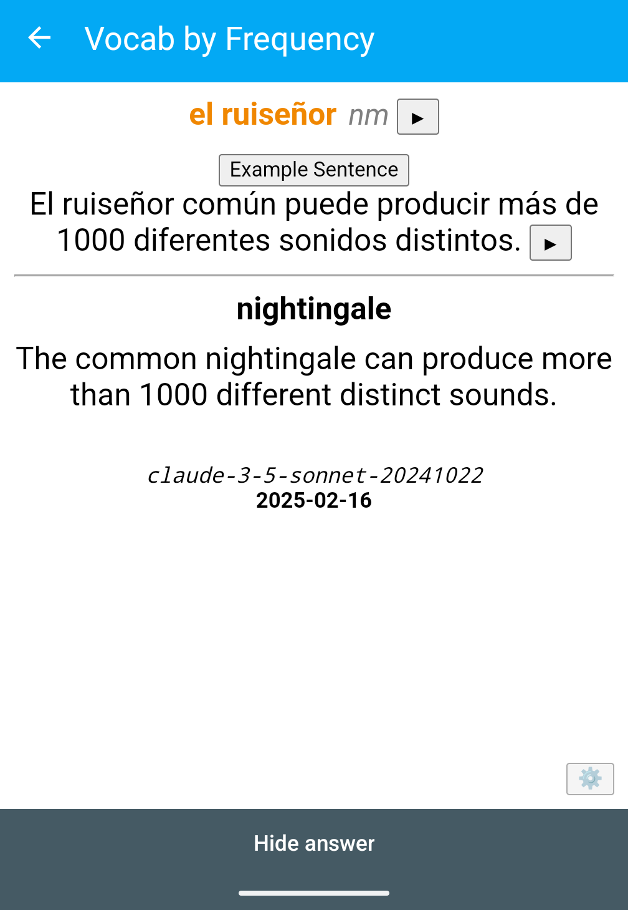

<div class="centered-container" style="height: 100dvh"> <p class="main-title">Programming For Yourself</p> <div class="main-title-info"> <div class="author"> Paul Ganssle </div> <div class="logo"> </div> <div class="link"> <span style="font-size: 1em;"><em>This talk on Github: <a href="https://github.com/pganssle-talks/2025-pycon-us-programming-for-yourself">pganssle-talks/2025-pycon-us-programming-for-yourself</a></em> </span> </div> <div class="license"> <a rel="license" href="https://creativecommons.org/publicdomain/zero/1.0/"> <img src="external-images/logos/cc-zero.svg" height="45px"> </a> </div> </div> </div> Notes: Hi everyone, I'm Paul Ganssle and for my day job, I'm a software developer, but as will soon become clear, it turns out that when my work day is over, I actually continue to be a software developer, believe it or not, and that's actually the subject of today's talk: the benefits of using your technical skills for your own pursuits! Because here's the thing: we live in a technologically advanced world, and sufficiently advanced technology is essentially indistinguishable from magic, which means...
<div class="centered-container"> <figure> <img src="images/generated/sorcerer_harvey_upscaled.png" class="splash" /> <figcaption class="smallcaption">From the IP-unencumbered film <i>Harvey Palmer and the Thinker's Rock</i></figcaption> </figure> </div> Notes: That you are a wizard. I mean, sorcerer. Think about it for a second, you invoke arcane commands, you summon daemons to do your bidding. You can perform unprecedented acts of divination. But the people in the world of Harry Potter, er.. I mean, Harvey Palmer... do not only do wizardry at their day job then do a bunch of stuff manually at home — they use magic in every aspect of their lives. Similarly, I think it's a bit sad that more people build impressive skill portfolios at work, but don't see the dozens of opportunities around them to use their programming skills to make their day-to-day life a bit better or just a bit more magical. -- # Home-cooked meals <div class="centered-container"> <img src="images/generated/home_cooked_meal_illustration.png" class="splash" /> <i><a href="https://www.robinsloan.com/notes/home-cooked-app/">Robin Sloan - An app can be a home-cooked meal</a></i> <i>https://www.robinsloan.com/notes/home-cooked-app/</i> </div> Notes: Some time ago I came across an article that proposed a metaphor that really resonated with me, which is apps as home-cooked meals. In this article, Robin Sloan talks about a messaging app that he built and maintains just for his family's use. The suggestion here is that despite the fact that none of us thinks anything of going out and preparing a meal for your family, and in fact many of us get great joy from it, despite the fact that we could just go to a restaurant and have something prepared by a professional chef or a whole kitchen crew! Or we could buy pre-packaged food with economies of scale! And still, building and maintaining a messaging app just for your family's use sounds a bit absurd to do, despite the fact that it probably takes less time than cooking your family a meal once a week, which sounds perfectly pleasant.
# Case Study: Chord Identification Trainer <div class="centered-container"> <img src="images/screenshots/study_abstract_00.png" class="screenshot splash"> </div> Notes: One of my projects that I think really illustrates the home-cooked meal idea is the Chord Identification Method trainer that I built; a few years ago I came across this study from a Japanese music school, which claimed that they have a method for teaching children between the ages of 2 and 6 to have perfect pitch which works by having them identify a series of chords. The way it works is that the child does 5 sessions of 25 identifications every day. Each session is very short, true, but this requires that I am able to be near a piano with my son, 5 times a day. It also requires me to generate sequences of randomly-chosen chords by some unspecified method, and they also recommend that you keep records of how your child does. Obviously, none of this is going to happen, but you know what is basically always around, can make sounds, and is really good at generating pseudo-random sequences? Computers! And luckily, as we've already established, as a programmer I hold dominion over computers, and can bend them to my will. -- # Feedback from your loved ones is fun <img src="images/screenshots/chord-trainer-v00-red-yellow.png" class="screenshot splash fragment nospace-fragment disappearing-fragment fade-out" data-fragment-index="0"> <img src="images/screenshots/chord-trainer-v02-cat-faces.png" class="screenshot splash fragment disappearing-fragment nospace-fragment fade-in" data-fragment-index="0" alt="Screenshot of the application which now has a neutral cat emoji next to the progress numbers." /> Notes: To solve this problem, I found an online piano, recorded a bunch of chords, and whipped up a simple web application that we could use with my son's tablet. Unfortunately, I had some trouble getting my son to feel motivated by making a number go up, and so obviously I needed to add... cats! Now there was a kitty whose emotions reflect how well you are doing. -- # Feedback from your loves ones is fun <div class="centered-container"> <div class="gallery two-high nospace-fragment disappearing-fragment fragment fade-out" data-fragment-index="0"> <div class="gallery-item"> <img src="images/screenshots/chord-trainer-v02-cat-hearts.png" class="screenshot"/> </div> <div class="gallery-item"> <img src="images/screenshots/chord-trainer-v02-cat-eek.png" class="screenshot"/> </div> </div> <div class="gallery two-wide two-high fragment fade-in" data-fragment-index="0"> <div class="gallery-item"> <img src="images/screenshots/chord-trainer-v02-cat-faces-0-happy.png" class="screenshot" /> </div> <div class="gallery-item"> <img src="images/screenshots/chord-trainer-v02-cat-faces-1-neutral.png" class="screenshot" /> </div> <div class="gallery-item"> <img src="images/screenshots/chord-trainer-v02-cat-faces-2-mad.png" class="screenshot" /> </div> <div class="gallery-item"> </div> <div> </div> Notes: When you get one right, she's happy, when you get one wrong, she's spooked! And her emotion varies from happy to sad depending on how well you are doing overall. I think this is an example of something that was actually quite fun to build because my son and I were working together to build something that worked for both of us. He also had very strong opinions about how we should indicate when you have gotten a perfect score, and several other things. Sometimes he would chide me with stuff like, "How come you haven't added this feature yet?" -- # My son shows off his inner hacker <div class="centered-container"> <img src="images/generated/hacker_kid.png" alt="A generated image of a kid in a hoodie sitting in a dark room working on a computer with green screen on black text" class="splash fragment disappearing-fragment nospace-fragment fade-out" data-fragment-index="0"> <video controls autoplay muted class="fragment disappearing-fragment nospace-fragment fade-in-and-out" data-fragment-index="0"> <source src="videos/color_change_hack.webm" type="video/webm"> </video> </div> Notes: This also provided some awesome moments of parental pride, when I got to see my son's inner hacker. You see, when I first threw together the app, it was pretty janky. It was really not designed for the kid to use it themselves, but eventually my son wanted to occasionally just do it himself like a game — sure! And wow, he was improving fast! He started getting perfect scores on the 3-chord level almost immediately! Of course, then I realized that he had found the bug where the score didn't change if you changed the level. He would go off into his room, turn it to the level he could do perfectly, and then change it back at the end and say, "Check it out, perfect score!" Brings a tear to your eye to see the next generation of hacker growing up before your very eyes, but of course I had to fix that to up the challenge. -- # You can use software to connect to those around you <div class="centered-container"> <img src="images/screenshots/chord-trainer-video-00.png" class="screenshot splash fragment nospace-fragment disappearing-fragment fade-out" data-fragment-index="0"> </div> -- # Progress <div class="centered-container"> <video controls> <source src="videos/chord_identification.webm" type="video/webm"> </video> </div> -- <style> div#logo-container { display: flex; flex-direction: row; justify-content: space-evenly; width: 95dvw; } div.logo-entry { display: flex; flex-direction: row; align-items: center; font-size: 1.5em; } div.logo-entry img.logo { height: 1.5em; max-height: 1.5em; margin-right: 0.2em; } </style> <div class="centered-container"> <img src="images/pictures/timepandamax_banner_like_and_subscribe.png" class="splash"> <div id="logo-container"> <div class="logo-entry"> <img src="external-images/logos/youtube.svg" class="logo"/> <a href="https://youtube.com/@TimePandaMax">TimePandaMax</a> </div> <div class="logo-entry"> <img src="external-images/logos/twitch.svg" class="logo"/> <a href="https://twitch.tv/timepanda920621">timepanda920621</a> </div> </div> </div>
# Case Study: Audiofeeder <div class="centered-container"> <img src="images/screenshots/antennapod_queue_screenshot_books_and_english.png" class="splash mobile-screenshot screenshot nospace-fragment fragment disappearing-fragment fade-in-and-out" data-fragment-index="0" /> <img src="images/screenshots/antennapod_queue_screenshot_spanish.png" class="splash mobile-screenshot screenshot nospace-fragment fragment fade-in" data-fragment-index="1" /> </div> -- # First version: manually run generated HTML pages -- <style> div.striped-border-blocks code { border: 3px black dashed; padding: 3px; } </style> <div class="side-by-side striped-border-blocks"> <div> ```python """ Serve Audiobooks as podcasts """ from datetime import datetime import time from email import utils import os import hashlib import qrcode import win32file ... server_name = "..." server_name="192.168.0.XXX" port_number = 6351 podcast_list = { "Writing of Fiction": { "author":"Edith Wharton", "title":"The Writing of Fiction", "cover":"WritingOfFiction-Cover.jpg", "location":"Nonfiction/Edith Wharton - The Writing of Fiction" }, "Dracula": { "author": "Bram Stoker", "title": "Dracula", "cover":"Cover.jpg", "location":"Fiction/Bram Stoker - Dracula" }, ... ``` <br/> ```python HTML_page = """ <html> <head> <title>Audiobook RSS Feeds</title> </head> <body> <center> <h2>Audiobook RSS Feeds</h2> <table> {audiobooks} </table> </center> </body> </html> """ ``` </div> <div style="display: flex"> ```python RSS_feed="""<?xml version="1.0" encoding="UTF-8"?> <rss xmlns:itunes="http://www.itunes.com/dtds/podcast-1.0.dtd" version="2.0"> <channel> <title>{channel_title}</title> <description>{channel_desc}</description> <link>{channel_link}</link> {cover_image_tag} <language>en-us</language> <lastBuildDate>{build_date}</lastBuildDate> <pubDate>{pub_date}</pubDate> <docs>http://blogs.law.harvard.edu/tech/rss</docs> <itunes:author>{author}</itunes:author> <itunes:summary>{channel_desc}</itunes:summary> <itunes:explicit>No</itunes:explicit> {itunes_cover_image_tag} {items} </channel> </rss> """ RSS_item = """ <item> <title>{item_title}</title> <link>{channel_link}</link> <description>{item_desc}</description> <pubDate>{item_pubdate}</pubDate> <guid>{item_guid}</guid> <enclosure url="{item_url}" length="{item_size}" type="audio/mpeg"/> </item> """ ``` </div> </div> -- # Still manually run, but with more features <div class="centered-container"> <img src="images/screenshots/audiobooks_v1.png" class="splash screenshot" /> </div> -- # Next version: Flask app <div class="centered-container fragment nospace-fragment disappearing-fragment fade-out" data-fragment-index="0" > <img src="images/screenshots/audio_feeder_00_list_entry.jpg" class="splash screenshot" /> </div> <div class="centered-container nospace-fragment fragment disappearing-fragment fade-in" data-fragment-index="0" > <div class="side-by-side"> <img src="images/screenshots/audio_feeder_01_list_qr.jpg" class="splash screenshot" /> <img src="images/screenshots/audio_feeder_02_settings_pulldown.jpg" class="splash screenshot" data-fragment-index="0" /> </div> </div> -- # Your applications can grow with you <div class="centered-container"> <img src="images/screenshots/audio-feeder-gh.png" class="splash screenshot fragment nospace-fragment disappearing-fragment fade-out" data-fragment-index="0"/> <div class="caption"> <i>Available at <a href="https://github.com/pganssle/audio-feeder">https://github.com/pganssle/audio-feeder</a></i> </div> </div> -- # Adding features for yourself <style> img.segfig { height: 80dvh !important; } </style> <img src="images/screenshots/audio_feeder_03_feeds.jpg" class="splash screenshot fragment disappearing-fragment fade-out" data-fragment-index="0" /> <img src="images/figures/chapter-segmentation-base.svg" class="splash figure fragment disappearing-fragment fade-in-and-out segfig" data-fragment-index="0" /> <img src="images/figures/chapter-segmentation-greedy-red.svg" class="splash figure fragment disappearing-fragment fade-in-and-out segfig" data-fragment-index="3" />
# Not every project is big! <div class="centered-container"> <figure> <img src="images/figures/gym-calibration.png" class="figure splash"/> <figcaption>The cable machines in the Google Cambridge gym have ~2.2x leverage over the nominal weights</figure> </figure> </div> -- # Not every project is big! ## Example: Podcast normalization <div class="centered-container"> <div class="gallery two-wide"> <div class="gallery-item"> <img src="images/figures/seattle-library-podcast-2014-10-28.png" class="figure"/> </div> <div class="gallery-item"> <img src="images/figures/triunvirato-podcast-2015-03-31.png" class="figure"/> </div> </div> <div class="gallery"> <div class="gallery-item"> <pre> | dBFS | | Name | True | Start | Middle | End | Random | |=====================================|==========|==========|==========|==========|==========| |10-percent-of-brain |<b> -33.65 </b>| -36.78 | -39.18 | -36.78 |<font color="#10BA13"> -33.43 </font>| |triunviratopodcast6-3-31-2015 |<b> -26.63 </b>| -31.13 | -33.73 | -31.13 |<font color="#10BA13"> -26.64 </font>| |ancient-greek-music |<b> -20.45 </b>|<font color="#F61010"> -82.81 </font>| -16.94 |<font color="#F61010"> -82.81 </font>|<font color="#10BA13"> -20.44 </font>| |serial-episode-07 |<b> -19.04 </b>|<font color="#10BA13"> -19.13 </font>| -20.78 |<font color="#10BA13"> -19.13 </font>|<font color="#10BA13"> -18.99 </font>| |seattle-library-podcast-2014-10-28 |<b> -34.13 </b>| -28.08 |<font color="#10BA13"> -33.97 </font>| -28.08 |<font color="#10BA13"> -34.06 </font>| |spy-museum-podcast-2014-11-07 |<b> -21.97 </b>|<font color="#F61010"> -42.74 </font>| -17.81 |<font color="#F61010"> -42.74 </font>|<font color="#10BA13"> -22.00 </font>| </pre> </div> </div> </div> -- # Not every project is big! <div class="centered-container"> <img src="images/screenshots/anki-nightingale-00.png" class="fragment mobile-screenshot screenshot disappearing-fragment nospace-fragment fade-out" data-fragment-index="0"/> <img src="images/screenshots/anki-nightingale-02-sentence-english.png" class="fragment mobile-screenshot disappearing-fragment nospace-fragment screenshot fade-in-and-out" data-fragment-index="1"/> <img src="images/screenshots/anki-nightingale-03-settings.png" class="fragment mobile-screenshot screenshot nospace-fragment fade-in" data-fragment-index="2"/> </div> -- # Not every project is big! <div> <pre class="code-wrapper"> <code data-trim data-noescape class="language-python"> <span class="fragment semi-fade-out" data-fragment-index="0"> SENTENCE_PROMPT: Final[str] = """\ You are an expert Spanish teacher and lexicographer, whose specialty is designing excellent example sentences that show off the range of uses of a given word. I am going to give you valid JSON representing a term ("term") in Spanish and its meaning in English ("meaning"). I would like you to generate valid JSON containing 4 example sentences in idiomatic Spanish that use the term accompanied by a translation from the original Spanish into English; the example sentences should use the sense of the term that has the meaning specified by the English meaning. When the word is a verb, select different moods and tenses in the different sentences. The translations do not need to be word-for-word translations, it is more important that they capture the general spirit of the original Spanish. </span><span class="fragment custom bolds" data-fragment-index="0">In some of your example sentences, it would be a bonus if they contain useful or interesting facts.</span> <span class="fragment semi-fade-out" data-fragment-index="0"> Example: ======== INPUT: ---------- { "term": "casa", "part_of_speech": "nf", "meaning": "house" } OUTPUT: -------------- { "term": "casa", "meaning": "house", "examples": [ { "spanish": "La casa de mi abuela está en el campo.", "english": "My grandmother's house is in the country." }, { ... """ </span> </code> </pre> <div><em>You know what's really good at languages? A Large Language Model</em></div> </div> -- <!-- .slide: data-transition="none" --> # Not every project is big! <div class="gallery three-wide"> <div class="gallery-item">  </div> <div class="gallery-item"> </div> <div class="gallery-item"> </div> </div> -- <h1> <span class="fragment nospace-fragment disappearing-fragment fade-out" data-fragment-index="1">Not every project is big!</span> <span class="fragment nospace-fragment fade-in" data-fragment-index="1">Sometimes your small projects <b>become<b> big</span></h1> <div> <img src="images/screenshots/anki-textual-lite-word-merger.svg" class="screenshot splash"> <div class="caption">Using Textual to create a proper UI to resolve word conflicts</div> </div>
# LLMs are changing the bespoke application landscape <img src="images/screenshots/claude-textual-ui-00.png" class="screenshot splash fragment disappearing-fragment nospace-fragment fade-out" data-fragment-index="0"/> <div class="gallery two-high"> <div class="gallery-item"> <img src="images/screenshots/claude-textual-ui-01.png" class="screenshot fragment nospace-fragment fade-in" data-fragment-index="0"/> </div> <div class="gallery-item"> <img src="images/screenshots/claude-textual-ui-02.png" class="screenshot fragment nospace-fragment fade-in" data-fragment-index="0"/> </div> </div> <div class="caption">LLMs let you be more ambitious</div> -- # LLMs make the easy stuff basically free <div class="centered-container"> <div class="side-by-side"> <div class="left-container left"> <b>Prompt</b> <blockquote> Please write me an imagemagick or other command line command that takes a number of images and removes a section from the middle of it (along the y axis). So if I have an image that is 500 pixels tall, and I specify `FROM=200` and `TO=250`, I want the result to be an image that is 450 pixels tall (because 50 rows of pixels have been removed), and the missing section should start 200 pixels from the top and go until 250 pixels from the top. </blockquote> </div> <div class="right left-container"> <b>Result</b> ```bash #!/bin/bash FROM=200 TO=250 for img in "$@"; do filename=$(basename -- "$img") extension="${filename##*.}" filename="${filename%.*}" # Calculate bottom section height (total height minus TO) height=$(identify -format "%h" "$img") bottom_height=$((height - TO)) # Extract top and bottom sections and combine convert "$img" \ -gravity North -crop x${FROM}+0+0 \ \( "$img" -gravity South -crop x${bottom_height}+0+0 \) \ -append "${filename}_trimmed.${extension}" echo "Processed $img -> ${filename}_trimmed.${extension}" done ``` </div> </div> -- # ML Models can be new components in your programs <div class="centered-container fragment disappearing-fragment nospace-fragment fade-out" data-fragment-index="0"> <div> <br/> `getclip | python -m anki_lang_cards.org_to_csv` <br/> <div class="gallery two-wide"> <div class="gallery-item medium-code left-container"> <h3>Input</h3> ``` - [ ] tienes más cara que espalda = ? - [ ] tiquismiquis = ? - [ ] chute = shot, goal - [ ] un hueso duro de roer = a tough nut to crack - [ ] fiaca = lazy (Argentina) - [ ] quintal = a lot? ``` </div> <div class="gallery-item medium-code left-container"> <h3>Output</h3> ``` ,tienes más cara que espalda,you have a lot of nerve,v phr,,,,, ,tiquismiquis,"fussiness, nitpicking",nm,el,,,, ,chute,"shot, goal",nm,el,,,, ,un hueso duro de roer,a tough nut to crack,v phr,,,,, ,fiaca,laziness (Argentina),nf,la,,,, ,quintal,"hundredweight, a large amount",nm,el,,,, ``` </div> </div> </div> </div> <div class="centered-container fragment nospace-fragment fade-in" data-fragment-index="0"> https://www.harihareswara.net/posts/2022/speech-to-text-with-whisper-how-i-use-it-why/ </div>
# Building for yourself goes beyond software <div class="gallery three-wide" data-fragment-index="0"> <div class="gallery-item"> <img src="images/pictures/hapticap-00-worn.png"> </div> <div class="gallery-item"> <img src="images/pictures/hapticap-01-inside.png"> </div> <div class="gallery-item"> <img src="images/pictures/hapticap-02-back.png"> </div> </div> https://pganssle.github.io/HaptiCap/
# Lessons learned <style> ul.wrap-up li { margin-top: 1em; margin-bottom: 1em; font-size: 1.5em; } div.wrap-up { font-size: 1.5em; } </style> <div class="centered-container"> <ul class="wrap-up"> <li class="fragment fade-in" data-fragment-index="0">It doesn't have to pay</li> <li class="fragment fade-in" data-fragment-index="1">It doesn't have to scale</li> <li class="fragment fade-in" data-fragment-index="2">It doesn't have to work for everyone</li> </ul> <div class="fragment fade-in wrap-up" data-fragment-index="3">It doesn't <em>have</em> to do any of these things, but it can!</div> </div> -- # Learn by doing <div style="display: flex; flex-direction: row; justify-content: space-evenly; align-items: center"> <img src="images/screenshots/chord-trainer-pwa-install-app.png" class="screenshot mobile-screenshot"> <img src="images/screenshots/chord-trainer-pwa-install-installing.png", class="screenshot mobile-screenshot"> <img src="images/screenshots/chord-trainer-pwa-install-icon.png"> </div> -- # More info <div class="centered-container"> <div class="left-container" style="font-size: 1.5em"> <p><b>Website:</b> <a href="https://ganssle.io">https://ganssle.io</a></p> <p><b>Blog:</b> <a href="https://blog.ganssle.io">https://blog.ganssle.io</a></p> <p><b>Mastodon:</b> <a href="https://qoto.org/@pganssle">@pganssle@qoto.org</a></p> <p><b>Github:</b> <a href="https://github.com/pganssle">@pganssle</a></p> <p><b>Gitlab:</b> <a href="https://gitlab.com/pganssle">@pganssle</a></p> </div> <div class="side-by-side"> <div class="left"> - [Chord Identification Method Trainer](https://pganssle.github.io/cim/) - [audio-feeder](https://github.com/pganssle/audio-feeder) - Anki card generator (Link to come) </div> <div class="right"> - [Python norm estimate](https://github.com/pganssle/python-norm-estimate) - [My dotfiles](https://github.com/pganssle/dotfiles) - [TimePandaMax](https://youtube.com/@TimePandaMax) </div> </div>